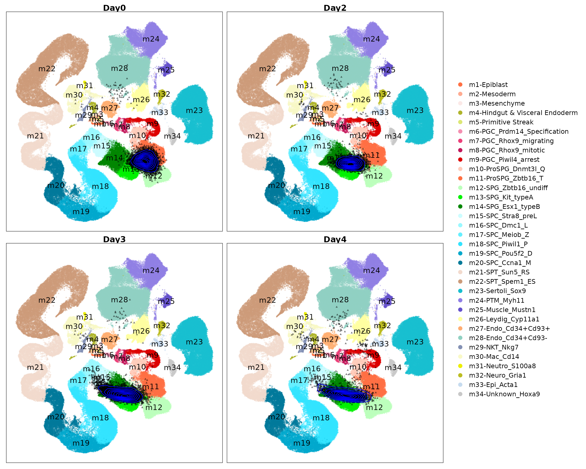
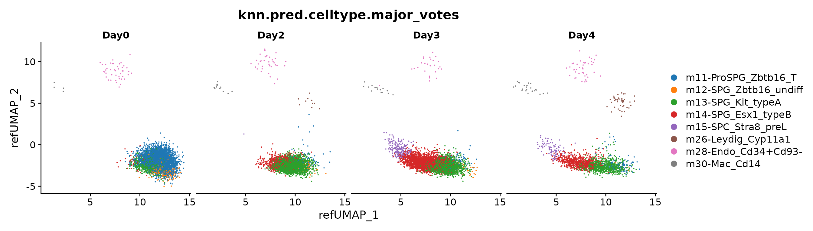
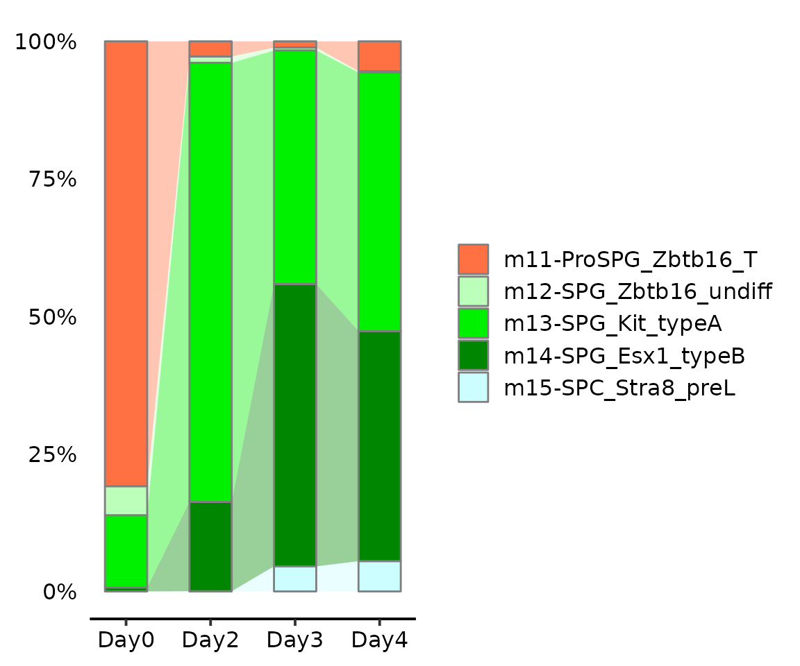

Project the NRRA induced meiotic cells onto mTCA
Compiled: November 06, 2023
Source:vignettes/mapQuery_invitro_meiosis.Rmd
mapQuery_invitro_meiosis.RmdAdopting the organ-scale reference atlas to evaluate the in vitro development procedure is an appealing application. In this tutorial, we projected germ cells that were dissociated from the testis of 6-day-old mouse pups and undergoing in vitro meiosis induced by co-treatment of nutrient restriction and retinoic acid (NRRA) 1 onto mouse testicular cell atlas (mTCA) using a pre-build model.
Download Related Dataset
library(Seurat)
library(ProjectSVR)
library(tidyverse)
options(timeout = max(3600, getOption("timeout")))
# reference model
if (!dir.exists("models")) dir.create("models")
download.file(url = "https://zenodo.org/record/8350732/files/model.mTCA.rds",
destfile = "models/model.mTCA.rds")
# query data
if (!dir.exists("query")) dir.create("query")
download.file(url = "https://zenodo.org/record/8350748/files/query_NRRA_induced_meiotic_cells.seurat.slim.qs",
destfile = "query/query_NRRA_induced_meiotic_cells.seurat.slim.qs")Map Query to Reference
reference <- readRDS("models/model.mTCA.rds")
seu.q <- qs::qread("query/query_NRRA_induced_meiotic_cells.seurat.slim.qs")
seu.q <- ProjectSVR::MapQuery(seu.q, reference = reference, add.map.qual = T, ncores = 10)
DimPlot(seu.q, reduction = "ref.umap", group.by = "day")
Maping quality
## cutoff by adjusted p value
MapQCPlot(seu.q, p.adj.cutoff = 0.1)Visualize the projected query cells onto the reference atlas.
PlotProjection(seu.q, reference, split.by = "day", ref.color.by = "cell_type",
ref.size = .5, ref.alpha = .3, query.size = 1, query.alpha = .5,
n.row = 2, legend.ncol = 1)
Label transfer
seu.q <- subset(seu.q, mapQ.p.adj < 0.1)
seu.q <- ProjectSVR::LabelTransfer(seu.q, reference, ref.label.col = "cell_type")
## Majority votes
feature.mat <- FetchData(seu.q, vars = rownames(seu.q))
cell.types <- FetchData(seu.q, vars = c("knn.pred.celltype"))
knn.pred.mv <- MajorityVote(feature.mat = feature.mat, cell.types = cell.types, k = 100, min.prop = 0.3)
seu.q$knn.pred.celltype.major_votes <- knn.pred.mv$knn.pred.celltype.major_votes
DimPlot(seu.q, group.by = "knn.pred.celltype.major_votes", split.by = "day") +
ggsci::scale_color_d3()
Note: The m9-PGC_Piwil4_arrest is a wrong label because
its location is on the center of m9, m26, and m33.
We validated this by checking the pan somatic marker Vim
and pan germ cell marker Ddx4. And we found m9
is not germ cell, but also expressed lower Vim.
This observation remind us that we should double check the label transfer results.
DefaultAssay(seu.q) <- "RNA"
seu.q[["RNA"]]@counts <- seu.q[["RNA"]]@data
seu.q <- NormalizeData(seu.q)
FeaturePlot(seu.q, reduction = "ref.umap", features = c("Vim", "Ddx4"), pt.size = .5)
Alluvia plot
Then we focus on the NRRA induced meiosis progression.
cellmeta <- subset(seu.q@meta.data, grepl("m1[12345]+", knn.pred.celltype.major_votes))
AlluviaPlot(cellmeta, by = "day",
fill = "knn.pred.celltype.major_votes",
colors = reference$ref.cellmeta$colors,
bar.width = .5, legend.ncol = 1)
We found 4~5% germ cells entering meiosis after 3 days of treatment by NRRA.
Session Info
## R version 4.1.2 (2021-11-01)
## Platform: x86_64-pc-linux-gnu (64-bit)
## Running under: Ubuntu 22.04.2 LTS
##
## Matrix products: default
## BLAS: /usr/lib/x86_64-linux-gnu/blas/libblas.so.3.10.0
## LAPACK: /usr/lib/x86_64-linux-gnu/lapack/liblapack.so.3.10.0
##
## locale:
## [1] LC_CTYPE=C.UTF-8 LC_NUMERIC=C LC_TIME=C.UTF-8
## [4] LC_COLLATE=C.UTF-8 LC_MONETARY=C.UTF-8 LC_MESSAGES=C.UTF-8
## [7] LC_PAPER=C.UTF-8 LC_NAME=C LC_ADDRESS=C
## [10] LC_TELEPHONE=C LC_MEASUREMENT=C.UTF-8 LC_IDENTIFICATION=C
##
## attached base packages:
## [1] stats graphics grDevices utils datasets methods base
##
## other attached packages:
## [1] lubridate_1.9.2 forcats_1.0.0 stringr_1.5.0 dplyr_1.1.3
## [5] purrr_1.0.2 readr_2.1.4 tidyr_1.3.0 tibble_3.2.1
## [9] ggplot2_3.4.3 tidyverse_2.0.0 ProjectSVR_0.2.0 SeuratObject_4.1.3
## [13] Seurat_4.3.0.1
##
## loaded via a namespace (and not attached):
## [1] rappdirs_0.3.3 scattermore_1.2
## [3] prabclus_2.3-2 R.methodsS3_1.8.2
## [5] ragg_1.2.5 bit64_4.0.5
## [7] knitr_1.43 DelayedArray_0.20.0
## [9] irlba_2.3.5.1 R.utils_2.12.2
## [11] data.table_1.14.8 KEGGREST_1.34.0
## [13] RCurl_1.98-1.12 doParallel_1.0.17
## [15] generics_0.1.3 BiocGenerics_0.40.0
## [17] cowplot_1.1.1 RSQLite_2.3.1
## [19] RApiSerialize_0.1.2 RANN_2.6.1
## [21] future_1.33.0 bit_4.0.5
## [23] tzdb_0.4.0 spatstat.data_3.0-1
## [25] httpuv_1.6.11 ggsci_3.0.0
## [27] isoband_0.2.7 SummarizedExperiment_1.24.0
## [29] xfun_0.40 hms_1.1.3
## [31] jquerylib_0.1.4 evaluate_0.21
## [33] promises_1.2.1 DEoptimR_1.1-2
## [35] fansi_1.0.4 igraph_1.5.1
## [37] DBI_1.1.3 htmlwidgets_1.6.2
## [39] spatstat.geom_3.2-5 stats4_4.1.2
## [41] ellipsis_0.3.2 mlr3data_0.7.0
## [43] backports_1.4.1 annotate_1.72.0
## [45] MatrixGenerics_1.6.0 RcppParallel_5.1.7
## [47] deldir_1.0-9 vctrs_0.6.3
## [49] Biobase_2.54.0 here_1.0.1
## [51] ROCR_1.0-11 abind_1.4-5
## [53] cachem_1.0.8 withr_2.5.0
## [55] mlr3verse_0.2.8 mlr3learners_0.5.6
## [57] robustbase_0.99-0 progressr_0.14.0
## [59] checkmate_2.2.0 sctransform_0.3.5
## [61] mlr3fselect_0.11.0 mclust_6.0.0
## [63] goftest_1.2-3 cluster_2.1.2
## [65] lazyeval_0.2.2 crayon_1.5.2
## [67] spatstat.explore_3.2-3 labeling_0.4.3
## [69] pkgconfig_2.0.3 GenomeInfoDb_1.30.1
## [71] nlme_3.1-155 nnet_7.3-17
## [73] rlang_1.1.1 globals_0.16.2
## [75] diptest_0.76-0 lifecycle_1.0.3
## [77] miniUI_0.1.1.1 palmerpenguins_0.1.1
## [79] rprojroot_2.0.3 polyclip_1.10-4
## [81] matrixStats_1.0.0 lmtest_0.9-40
## [83] graph_1.72.0 Matrix_1.6-1
## [85] zoo_1.8-12 ggridges_0.5.4
## [87] GlobalOptions_0.1.2 png_0.1-8
## [89] viridisLite_0.4.2 rjson_0.2.21
## [91] stringfish_0.15.8 bitops_1.0-7
## [93] R.oo_1.25.0 KernSmooth_2.23-20
## [95] Biostrings_2.62.0 blob_1.2.4
## [97] shape_1.4.6 paradox_0.11.1
## [99] parallelly_1.36.0 spatstat.random_3.1-6
## [101] S4Vectors_0.32.4 scales_1.2.1
## [103] memoise_2.0.1 GSEABase_1.56.0
## [105] magrittr_2.0.3 plyr_1.8.8
## [107] ica_1.0-3 zlibbioc_1.40.0
## [109] compiler_4.1.2 RColorBrewer_1.1-3
## [111] clue_0.3-64 fitdistrplus_1.1-11
## [113] cli_3.6.1 XVector_0.34.0
## [115] mlr3tuningspaces_0.4.0 mlr3filters_0.7.1
## [117] listenv_0.9.0 patchwork_1.1.3
## [119] pbapply_1.7-2 MASS_7.3-55
## [121] mlr3hyperband_0.4.5 tidyselect_1.2.0
## [123] stringi_1.7.12 textshaping_0.3.6
## [125] highr_0.10 yaml_2.3.7
## [127] ggrepel_0.9.3 grid_4.1.2
## [129] sass_0.4.7 tools_4.1.2
## [131] timechange_0.2.0 mlr3misc_0.12.0
## [133] future.apply_1.11.0 parallel_4.1.2
## [135] mlr3cluster_0.1.8 circlize_0.4.15
## [137] rstudioapi_0.15.0 uuid_1.1-1
## [139] qs_0.25.5 foreach_1.5.2
## [141] AUCell_1.16.0 gridExtra_2.3
## [143] farver_2.1.1 Rtsne_0.16
## [145] digest_0.6.33 shiny_1.7.5
## [147] fpc_2.2-10 Rcpp_1.0.11
## [149] GenomicRanges_1.46.1 later_1.3.1
## [151] RcppAnnoy_0.0.21 httr_1.4.7
## [153] AnnotationDbi_1.56.2 mlr3mbo_0.2.1
## [155] mlr3tuning_0.19.0 ComplexHeatmap_2.10.0
## [157] kernlab_0.9-32 colorspace_2.1-0
## [159] XML_3.99-0.14 fs_1.6.3
## [161] tensor_1.5 reticulate_1.31
## [163] IRanges_2.28.0 splines_4.1.2
## [165] lgr_0.4.4 uwot_0.1.16
## [167] bbotk_0.7.2 spatstat.utils_3.0-3
## [169] pkgdown_2.0.7 sp_2.0-0
## [171] mlr3pipelines_0.5.0-1 flexmix_2.3-19
## [173] plotly_4.10.2 systemfonts_1.0.4
## [175] xtable_1.8-4 jsonlite_1.8.7
## [177] modeltools_0.2-23 R6_2.5.1
## [179] pillar_1.9.0 htmltools_0.5.6
## [181] mime_0.12 glue_1.6.2
## [183] fastmap_1.1.1 mlr3_0.16.1
## [185] class_7.3-20 codetools_0.2-18
## [187] spacefillr_0.3.2 utf8_1.2.3
## [189] lattice_0.20-45 bslib_0.5.1
## [191] spatstat.sparse_3.0-2 leiden_0.4.3
## [193] mlr3viz_0.6.1 survival_3.2-13
## [195] rmarkdown_2.24 desc_1.4.2
## [197] munsell_0.5.0 GetoptLong_1.0.5
## [199] GenomeInfoDbData_1.2.7 iterators_1.0.14
## [201] reshape2_1.4.4 gtable_0.3.4